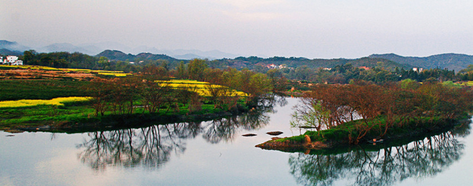

月亮湾位于紫阳镇往东700米处，婺源月亮湾坐落于江西省婺源县东北部秋口镇金盘村附近，在去往李坑的途中。它是镶在婺源县星江河中的一颗“生态明珠”。 月亮湾因江中有一江心洲如一轮眉月而得名，依山伴水，水面平静如镜。春日周边田野大地金灿灿的油菜花、绿菌菌的茶叶、古朴的民居点缀。 放眼望去一湾湖水如弯月，一弯黄绿的月亮静卧水面，袖珍的小岛，翠绿的湖水。笼罩在晨雾中的山峦跌宕起伏，山下黛瓦白墙组成的古村落在袅袅炊烟中显得那么亲切。 偶有三五农妇临湖浆洗，时常引得路人纷纷驻足，深得游客喜爱，拍摄此时美景。以至成为摄影爱好者们最佳拍摄地之一。